The whole picture
An object combines mutable field locations with a class identity used for method lookup.
Reading connection: Companion explanation. This topic has no standalone chapter in the supplied English textbook.
Original lecture: PDF p. 6 · PDF p. 10 · PDF p. 16 · PDF p. 17 · PDF p. 18 · PDF p. 20 · PDF p. 24 · PDF p. 25 · PDF p. 26. Page numbers here mean PDF positions.
Focus points
- Build the class environment before evaluating the main expression.
- Inherited field locations persist in each object; field shadowing requires distinct identities.
- A normal message send dispatches from the receiver's runtime class.
- super begins lookup at the parent of the method's host class while retaining the same receiver.
Formula and syntax
Read every symbol in context: Class environment, self, and super · Locations and memory · Lookup and map extension. The formula above is a companion restatement or example, not a verbatim slide transcription.
Problem-solving route
- Build class and inheritance tables.
- Allocate object field locations.
- Evaluate receiver and arguments.
- Choose method lookup start class.
- Run method with fields parameters and self.

View Mermaid source
%%{init: {"flowchart": {"wrappingWidth": 600}}}%%
flowchart TD
accTitle: Lecture 11 reasoning route
accDescr: Numbered stages for applying classes and objects.
N0["1. Build class and inheritance tables"]
N1["2. Allocate object field locations"]
N0 --> N1
N2["3. Evaluate receiver and arguments"]
N1 --> N2
N3["4. Choose method lookup start class"]
N2 --> N3
N4["5. Run method with fields parameters and self"]
N3 --> N4
Worked trace
If a child overrides m, self.m() can choose the override. A super.m() in a method starts from the host class's parent and does not allocate a new parent object.
Homework connection
Extends HW3 environments and memory. No class-language implementation is specified in HW1–HW4.
Open the HW3 thinking guide · Full concept-to-homework map
Check your understanding
Is self always an object of the method's declaring class?
Reveal the explanation
No. An inherited method may run with a receiver whose runtime class is a subclass.